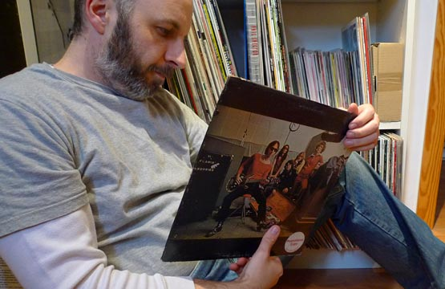
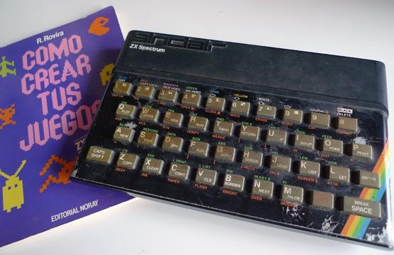

Something about me
I love record collecting, in fact I love it so much that I have ran out of space to store vinyl records, and have to buy them in MP3. That's an inconvenient of not being rich, an advantage is that I actually have time to listen to them.

Something Quirky
I learned Basic by copying other people programs. I had a ZX Spectrum in the eighties but no money for games, so I had to spend entire Saturday mornings typing programs from magazines to be able to play anything.
At first I had no tape recorder to save my programs (yes we used regular tape recorders back then) so computer had to be turned on the entire weekend to fully exploit the fun.
Read my Blog
